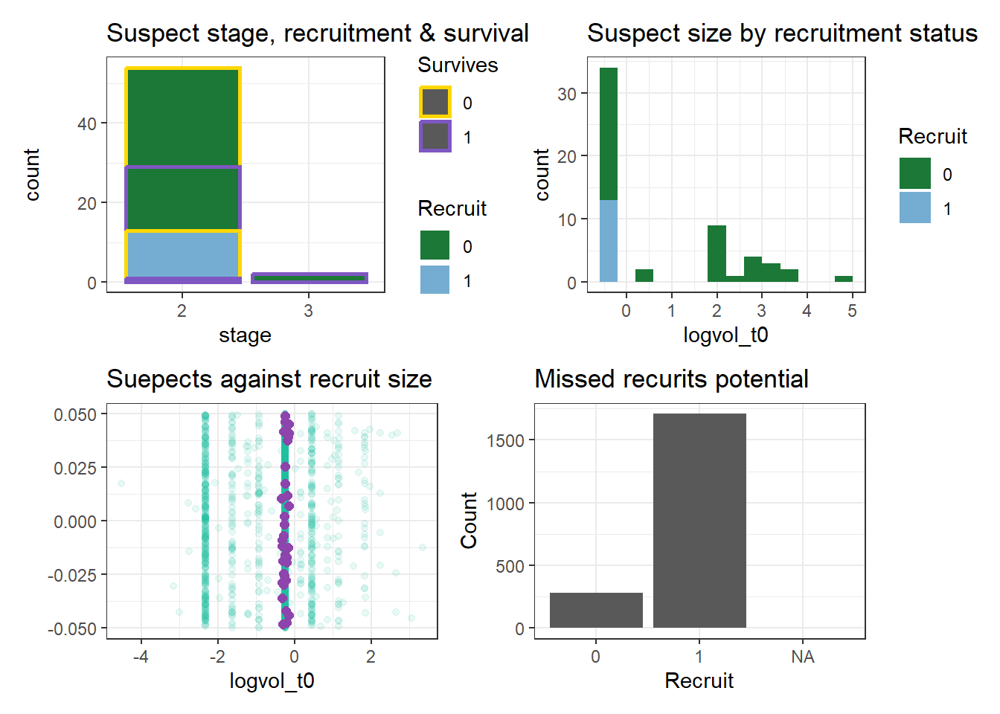
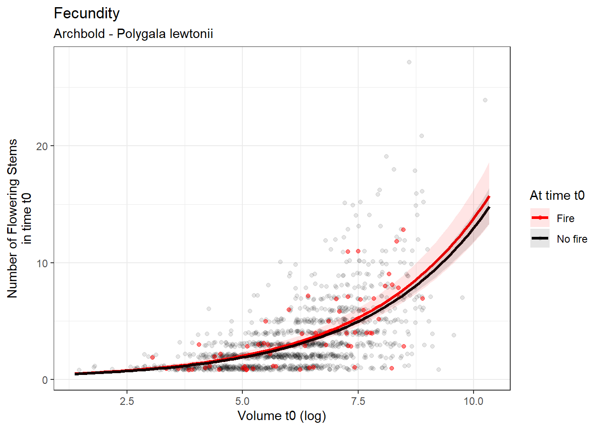
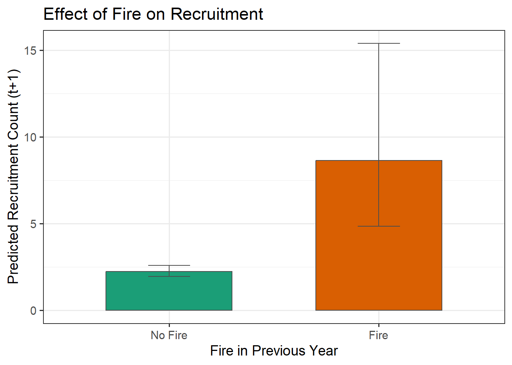
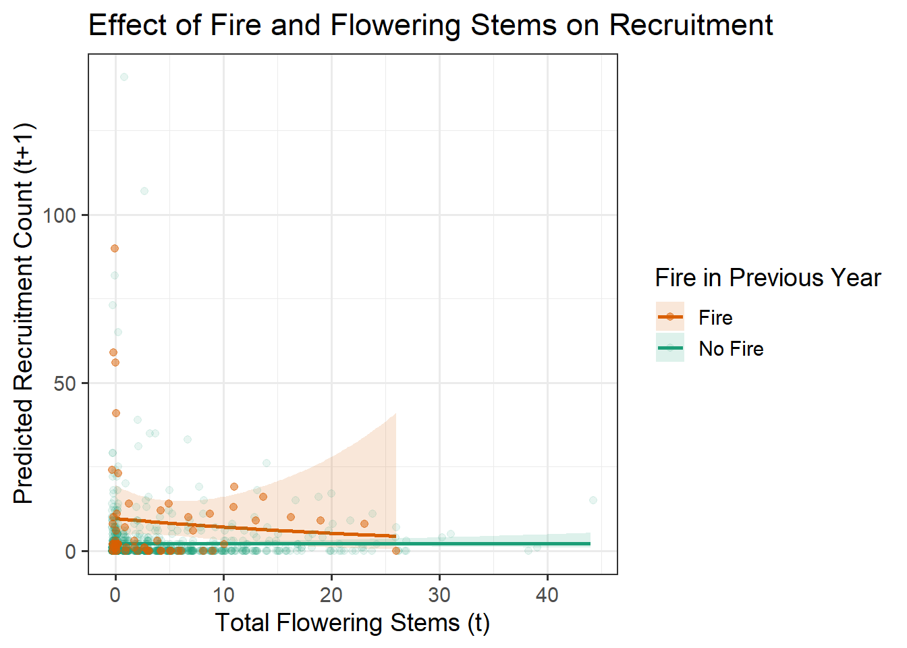
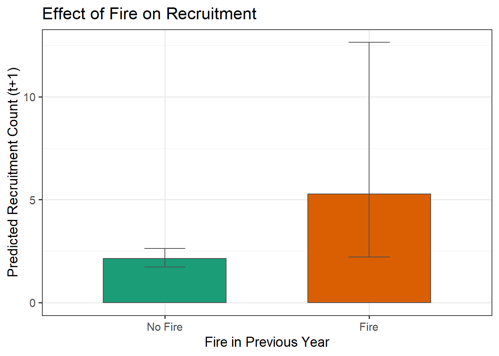
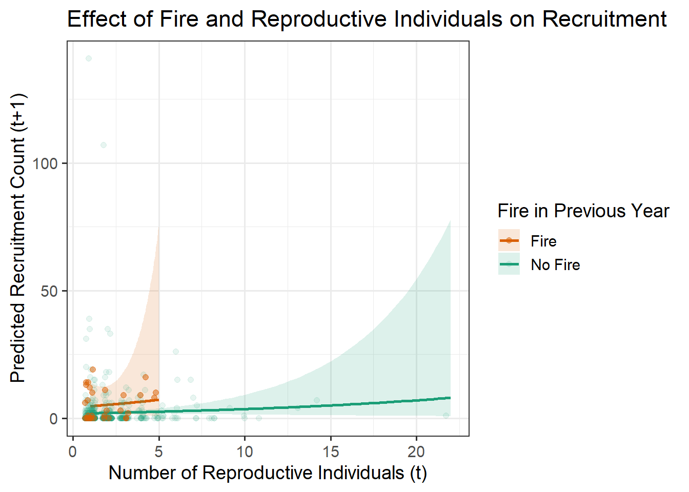
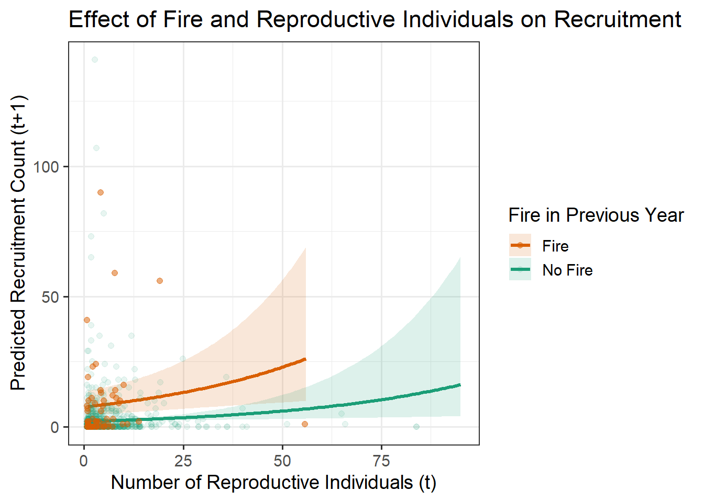

3 Investigations
3.1 Seedbank
There is no information on seed banks in the meta data, nor in the original data.
The published literature and associated unpublished data strongly suggest that Polygala lewtonii relies on a persistent soil seedbank for post-fire recruitment. While the dataset itself contains no direct information on seed banks, several observations and experimental results provide compelling indirect evidence for their ecological importance.
Field observations indicate that most post-fire recruits emerged in quadrats where no surviving reproductive adults were present, implying that recruitment originated from seeds deposited in earlier years. Specifically, the study notes that:
‘For these 2 cohorts, between 75.8% and 79.0% of seedlings recruited into burned quadrats with no surviving reproductive adults, indicating that most recruitment was from the preburn seedbank rather than from newly produced seeds.’
The timing of recruitment relative to fire and flowering supports this conclusion:
‘Recruits in the first 2 post-burn cohorts (December 2001 and March 2002) came from the seedbank, rather than from seeds shed by surviving adults, which did not produce chasmogamous flowers between the August 2001 burn and the December 2001 and March 2002 censuses.’
Supporting this field evidence, a separate experiment demonstrated long-term seed viability:
‘A separate field experiment demonstrated that buried seeds may retain viability for at least 2 years (C. W. Weekley and E. S. Menges, unpubl. data), indicating that P. lewtonii is capable of accumulating a persistent (sensu Thompson and Grime 1979) soil seedbank.’
The study also suggests that fire enhances the reproductive success of recruits, reinforcing the seedbank’s role in population dynamics:
‘The combined effects of higher seedling recruitment, higher survival to reproduction and earlier flowering indicate that P. lewtonii plants recruiting into burned microsites make a greater contribution to the seedbank, and thus to the long-term viability of the population, than do recruits in unburned microsites.’
While smoke-stimulated germination has been demonstrated in the lab, field evidence is limited: However in their publication they do not specify any germination rates (Lindon and Menges, 2008).
‘In a laboratory experiment, Lindon and Menges (2008) showed that short-term exposure to smoke promoted ex situ germination in P. lewtonii, but this result was not supported by a field experiment (C.W. Weekley, unpubl. data).’
Overall, although the dataset itself does not directly record seedbank dynamics, the documented timing of recruitment, absence of flowering adults, and experimental findings together indicate that P. lewtonii maintains a persistent and ecologically meaningful soil seedbank that plays a key role in its post-fire recovery and long-term persistence.
3.2 Fire
The site experienced four prescribed fires (2001, 2007, 2009, 2015). Post-fire observations included plant-level fire exposure (e.g., singed, scorched, consumed) and percent area burned per plot (except for the 2001 fire). The dataset captures both mortality and recruitment following fire, contributing to an understanding of population responses to disturbance. Importantly, the species does not exhibit dormancy, and plants marked as dead were rarely observed alive in subsequent censuses.
‘This dataset also captures post-fire mortality and recruitment events following four prescribed burns.’ ‘[…] four prescribed burns during the 2001-2017 study, although not all plots were affected’ ‘P. lewtonii plants are usually killed by fire and seedlings recruit post-fire from a soil seedbank (B. Pace-Aldana, pers. comm.; C. W. Weekley, unpubl. data).’
3.2.1 The extent of fire
To assess whether visual signs of fire damage on individual plants persist beyond the year of fire, we examined the variable postburn_plant, which records damage severity following prescribed burns. Specifically, we tested whether plants showing fire damage in one year continued to exhibit signs of fire in the subsequent year. Despite repeated prescribed burns in 2001, 2007, 2009, and 2015, our analysis found no evidence that fire damage carries over across years at the individual level. That is, plants recorded as damaged in one year were not marked as damaged again in the following year. This suggests that visible fire effects are either short-lived or not consistently recorded beyond the fire year.
Code
## # A tibble: 0 × 30
## # ℹ 30 variables: site <dbl>, quad <dbl>, cohort <dbl>, id <chr>, year <dbl>,
## # stage <fct>, survives <dbl>, size_t0 <dbl>, flower <dbl>,
## # flowering_stems <dbl>, recruits <dbl>, recruit <dbl>, size_t1 <dbl>,
## # logsize_t1 <dbl>, logsize_t0 <dbl>, logsize_t0_2 <dbl>, logsize_t0_3 <dbl>,
## # crown_diameter <dbl>, stems <dbl>, postburn_plant <dbl>, volume_t0 <dbl>,
## # volume_t1 <dbl>, logvol_t0 <dbl>, logvol_t1 <dbl>, logvol_t0_2 <dbl>,
## # logvol_t0_3 <dbl>, fire <lgl>, fire_t <lgl>, fire_t1 <lgl>, year_t1 <dbl>To quantify fire severity across space and time, we calculated the proportion of individuals with visible signs of fire damage (postburn_plant > 0) in each plot-year. Only plot-years with at least one scorched individual were included. This metric reflects within-plot fire intensity as experienced by the plant population.
Code
## # A tibble: 70 × 6
## site quad year n_total n_fire severity
## <dbl> <dbl> <dbl> <int> <int> <dbl>
## 1 1 625 2009 5 5 1
## 2 1 629 2009 2 2 1
## 3 1 631 2009 1 1 1
## 4 1 633 2009 1 1 1
## 5 2 581 2007 1 1 1
## 6 2 599 2007 1 1 1
## 7 2 601 2007 1 1 1
## 8 2 605 2007 2 2 1
## 9 2 607 2007 4 1 0.25
## 10 3 533 2007 1 1 1
## # ℹ 60 more rowsWhat is up with site 3 quad 539 year 2009
Code
df_3_539_2009 <- df %>%
filter(site == 3 & quad == 539 & year == 2009)
# Bar plot: Stage by recruits
fig_stage <- ggplot() +
geom_bar(data = df_3_539_2009,
aes(x = stage,
fill = as.factor(recruits),
color = as.factor(survives)),
linewidth = 1) +
scale_fill_manual(values = c('0' = '#1b7837', '1' = '#74add1')) +
scale_color_manual(values = c('0' = '#FFD700', '1' = '#7E57C2')) +
theme_bw() +
labs(fill = 'Recruit',
color = 'Survives',
title = 'Suspect stage, recruitment & survival')
# Histogram: logvol_t0 by recruitment
fig_hist <- ggplot() +
geom_histogram(data = df_3_539_2009, binwidth = 0.4,
aes(x = logvol_t0, fill = as.factor(recruits))) +
scale_fill_manual(values = c('0' = '#1b7837', '1' = '#74add1')) +
theme_bw() +
labs(fill = 'Recruit',
title = 'Suspect size by recruitment status')
# Flat jitter plot for overlap
fig_jitter <- ggplot() +
geom_jitter(data = df %>% filter(recruits == 1),
aes(x = logvol_t0, y = 0),
height = 0.05, color = '#1ABC9C', alpha = 0.1) +
geom_jitter(data = df_3_539_2009 %>% filter(logvol_t0 < 0),
aes(x = logvol_t0, y = 0),
height = 0.05, width = 0.1, color = '#8E44AD', alpha = 1, size = 2) +
theme_bw() +
labs(x = "logvol_t0", y = "",
title = "Suepects against recruit size")
# Matching median logvol_t0
fig_median <- df %>%
filter(logvol_t0 == (df_3_539_2009 %>%
filter(logvol_t0 < 0) %>%
summarise(median(logvol_t0)) %>% pull())) %>%
ggplot() +
geom_bar(aes(x = as.factor(recruits))) +
labs(x = 'Recruit', y = 'Count',
title = 'Missed recurits potential') +
theme_bw()
# Combine all plots
(fig_stage | fig_hist) / (fig_jitter | fig_median)
To better understand the temporal patterns of fire effects on individual plants, we summarized the presence of fire damage signs (postburn_plant > 0) across months and years. By grouping observations by year and month, we quantified both the number and proportion of individuals exhibiting scorch damage.
Code
df_og %>%
separate(col = date, into = c("year", "month"), sep = "-") %>%
filter(!is.na(postburn_plant)) %>%
mutate(fire = postburn_plant > 0) %>%
group_by(year, month) %>%
summarise(
n_total = n(),
n_fire = sum(fire),
pct_fire = round(100 * n_fire / n_total, 1),
.groups = "drop"
) %>%
arrange(year, month)## # A tibble: 3 × 5
## year month n_total n_fire pct_fire
## <chr> <chr> <int> <int> <dbl>
## 1 2007 12 188 60 31.9
## 2 2009 06 414 144 34.8
## 3 2015 06 236 45 19.13.2.2 Fire on Survival
Code
df_su <- df %>%
mutate(fire = if_else(postburn_plant > 0 & !is.na(postburn_plant), T, F)) %>%
filter(size_t0 != 0) %>%
mutate(fire_label = ifelse(fire == 1, 'Fire', 'No fire')) %>%
dplyr::select(id, year, survives,
logvol_t0, logvol_t1, logvol_t0_2, logvol_t0_3,
fire, fire_label)
# Create binned summary using group_split()
df_su_binned <- df_su %>%
group_split(fire_label) %>%
purrr::map_df(~ plot_binned_prop(.x, 10, logvol_t0, survives) %>%
mutate(fire_label = unique(.x$fire_label)))
fig_su_overall <- ggplot(df_su_binned, aes(x = logvol_t0, y = survives, color = fire_label)) +
geom_jitter(data = df_su, aes(x = logvol_t0, y = survives, color = fire_label),
position = position_jitter(width = 0.1, height = 0.3), alpha = 0.1) +
geom_point(size = 2) +
geom_errorbar(aes(ymin = lwr, ymax = upr), width = 0.2, linewidth = 0.5) +
scale_color_manual(values = c('No fire' = 'black', 'Fire' = 'red')) +
scale_y_continuous(breaks = c(0.1, 0.5, 0.9), limits = c(0, 1.01)) +
theme_bw() +
theme(
axis.text = element_text(size = 8),
title = element_text(size = 10),
plot.subtitle = element_text(size = 8),
legend.position = 'top') +
labs(
title = 'Survival',
subtitle = v_ggp_suffix,
x = expression('Volume (log)'[t0]),
y = 'Survival Probability\nfrom time t0 to t1 ',
color = 'At time t0')
fig_su_overall
Code
# Logistic regression
mod_su_0 <- glm(survives ~ fire,
data = df_su, family = 'binomial')
# Logistic regression
mod_su_1 <- glm(survives ~ logvol_t0 + fire,
data = df_su, family = 'binomial')
# Quadratic logistic model
mod_su_2 <- glm(survives ~ logvol_t0 + logvol_t0_2 + fire,
data = df_su, family = 'binomial')
# Cubic logistic model
mod_su_3 <- glm(survives ~ logvol_t0 + logvol_t0_2 + logvol_t0_3 + fire,
data = df_su, family = 'binomial')
# Compare models using AIC
mods_su <- list(mod_su_0, mod_su_1, mod_su_2, mod_su_3)
mods_su_dAIC <- AICtab(mods_su, weights = T, sort = F)$dAIC
# Get the sorted indices of dAIC values
mods_su_sorted <- order(mods_su_dAIC)
# Establish the index of model complexity
if (length(v_mod_set_su) == 0) {
mod_su_index_bestfit <- mods_su_sorted[1]
v_mod_su_index <- mod_su_index_bestfit - 1
} else {
mod_su_index_bestfit <- v_mod_set_su +1
v_mod_su_index <- v_mod_set_su}
mod_su_bestfit <- mods_su[[mod_su_index_bestfit]]
mod_su_ranef <- coef(mod_su_bestfit)
# Create prediction data frames for fire = 0 and fire = 1
df_su_pred <- data.frame(
logvol_t0 = rep(seq(min(na.omit(df_su$logvol_t0)),
max(na.omit(df_su$logvol_t0)), length.out = 100), 2),
fire = rep(c(FALSE, TRUE), each = 100)) %>%
mutate(logvol_t0_2 = logvol_t0^2,
fire_label = ifelse(fire == 1, 'Fire', 'No fire')) %>%
mutate(survives = predict(mod_su_bestfit, newdata = ., type = 'response'))
# Binned observed data for both fire levels
df_su_binned <- bind_rows(
plot_binned_prop(filter(df_su, fire == 0), 10, logvol_t0, survives) %>%
mutate(fire_label = 'No fire'),
plot_binned_prop(filter(df_su, fire == 1), 10, logvol_t0, survives) %>%
mutate(fire_label = 'Fire'))
# Plot 1: Raw data + prediction lines
fig_su_line_combined <- ggplot() +
geom_jitter(data = df_su, aes(x = logvol_t0, y = survives, color = fire_label),
alpha = 0.25, width = 0.08, height = 0.3) +
geom_line(data = df_su_pred, aes(x = logvol_t0, y = survives, color = fire_label),
linewidth = 0.9) +
scale_color_manual(values = c('No fire' = 'black', 'Fire' = 'red')) +
theme_bw() +
labs(title = NULL, x = 'Volume at time t0 (log)', y = 'Survival to time t1') +
theme(legend.position = 'none')
# Plot 2: Binned proportions + prediction lines
fig_su_bin_combined <- ggplot() +
geom_point(data = df_su_binned, aes(x = logvol_t0, y = survives, color = fire_label)) +
geom_errorbar(data = df_su_binned, aes(x = logvol_t0, ymin = lwr, ymax = upr, color = fire_label),
width = 0.2) +
geom_line(data = df_su_pred, aes(x = logvol_t0, y = survives, color = fire_label),
linewidth = 0.9) +
scale_color_manual(values = c('No fire' = 'black', 'Fire' = 'red')) +
theme_bw() +
ylim(0, 1) +
labs(title = NULL, x = 'Volume at time t0 (log)', y = 'Survival to time t1',
color = 'At time t0') +
theme(legend.position = 'top')
# Combine the two plots
fig_su_all <- fig_su_line_combined + fig_su_bin_combined +
plot_annotation(
title = 'Survival',
subtitle = v_ggp_suffix,
theme = theme(
plot.title = element_text(size = 14, face = 'bold'),
plot.subtitle = element_text(size = 10, face = 'italic')))
fig_su_all
3.2.3 Fire on Growth
Code
df_gr <- df %>%
mutate(fire = if_else(postburn_plant > 0 & !is.na(postburn_plant), T, F)) %>%
filter(size_t0 != 0) %>%
mutate(fire_label = ifelse(fire == 1, 'Fire', 'No fire')) %>%
dplyr::select(id, year,
logvol_t0, logvol_t1, logvol_t0_2, logvol_t0_3,
fire, fire_label)
fig_gr_overall <- ggplot(df_gr, aes(x = logvol_t0, y = logvol_t1, color = fire_label)) +
geom_point(alpha = 0.5, size = 0.7) +
scale_color_manual(values = c('No fire' = 'black', 'Fire' = 'red')) +
theme_bw() +
theme(
axis.text = element_text(size = 8),
title = element_text(size = 10),
plot.subtitle = element_text(size = 8),
legend.position = 'top') +
labs(
title = 'Growth',
subtitle = v_ggp_suffix,
x = expression('Volume (log)'[t0]),
y = expression('Volume (log)'[t1]),
color = 'At time t0')
fig_gr_overall
Code
# Intercept model
mod_gr_0 <- lm(logvol_t1 ~ fire,
data = df_gr)
# Linear model
mod_gr_1 <- lm(logvol_t1 ~ logvol_t0 + fire,
data = df_gr)
# Quadratic model
mod_gr_2 <- lm(logvol_t1 ~ logvol_t0 + logvol_t0_2 + fire,
data = df_gr)
# Cubic model
mod_gr_3 <- lm(logvol_t1 ~ logvol_t0 + logvol_t0_2 + logvol_t0_3 + fire,
data = df_gr)
mods_gr <- list(mod_gr_0, mod_gr_1, mod_gr_2, mod_gr_3)
mods_gr_dAIC <- AICtab(mods_gr, weights = T, sort = F)$dAIC
# Get the sorted indices of dAIC values
mods_gr_sorted <- order(mods_gr_dAIC)
# Establish the index of model complexity
if (length(v_mod_set_gr) == 0) {
mod_gr_index_bestfit <- mods_gr_sorted[1]
v_mod_gr_index <- mod_gr_index_bestfit - 1
} else {
mod_gr_index_bestfit <- v_mod_set_gr +1
v_mod_gr_index <- v_mod_set_gr
}
mod_gr_bestfit <- mods_gr[[mod_gr_index_bestfit]]
mod_gr_ranef <- coef(mod_gr_bestfit)
# Create prediction data for fire = 0 and fire = 1
df_gr_pred <- data.frame(
logvol_t0 = rep(seq(min(df_gr$logvol_t0, na.rm = TRUE),
max(df_gr$logvol_t0, na.rm = TRUE), length.out = 100), 2),
fire = rep(c(F, T), each = 100)) %>%
mutate(fire_label = ifelse(fire == 1, 'Fire', 'No fire'),
logvol_t1 = predict(mod_gr_bestfit, newdata = .))
# Plot 1: Observed points + prediction lines
fig_gr_line_combined <- ggplot() +
geom_point(data = df_gr %>% filter(fire == F),
aes(x = logvol_t0, y = logvol_t1, color = fire_label),
alpha = 0.1, size = 0.8) +
geom_point(data = df_gr %>% filter(fire == T),
aes(x = logvol_t0, y = logvol_t1, color = fire_label),
alpha = 0.6, size = 0.8) +
geom_line(data = df_gr_pred, aes(x = logvol_t0, y = logvol_t1, color = fire_label),
linewidth = 1) +
scale_color_manual(values = c('No fire' = 'black', 'Fire' = 'red')) +
theme_bw() +
labs(x = expression('Volume (log)'[t0]),
y = expression('Volume (log)'[t1])) +
theme(
legend.position = 'none',
plot.title = element_blank(),
plot.subtitle = element_blank())
# Plot 2: Predicted vs observed
fig_gr_pred_combined <- ggplot(df_gr, aes(x = predict(mod_gr_bestfit, newdata = df_gr),
y = logvol_t1, color = fire_label)) +
geom_point(alpha = 0.4, size = 0.8) +
geom_abline(intercept = 0, slope = 1, color = 'black', linetype = 'dashed', linewidth = 1) +
scale_color_manual(values = c('No fire' = 'black', 'Fire' = 'red')) +
theme_bw() +
labs(x = 'Predicted', y = 'Observed', color = 'At time t0') +
theme(
legend.position = 'top',
plot.title = element_blank(),
plot.subtitle = element_blank())
# Combine plots
fig_gr_all_combined <- fig_gr_line_combined + fig_gr_pred_combined +
plot_annotation(
title = 'Growth Prediction',
subtitle = v_ggp_suffix,
theme = theme(
plot.title = element_text(size = 14, face = 'bold'),
plot.subtitle = element_text(size = 10, face = 'italic')))
fig_gr_all_combined
3.2.4 Fire on Flowering
Code
df_fl <- df %>%
mutate(fire = if_else(postburn_plant > 0 & !is.na(postburn_plant), T, F)) %>%
filter(!is.na(flower)) %>%
#filter(!is.na(fire) & !is.na(size_t0) & !is.na(survives)) %>%
dplyr::select(id, year, flower,
logvol_t0, logvol_t1, logvol_t0_2, logvol_t0_3,
fire) %>%
mutate(
flower = if_else(flower > 0, 1, flower),
fire_label = if_else(fire == 1, 'Fire', 'No fire'))
# Create binned flowering probability by fire group
df_fl_binned <- df_fl %>%
filter(!is.na(fire) & !is.na(logvol_t0)) %>%
group_split(fire_label) %>%
map_df(~ plot_binned_prop(.x, 10, logvol_t0, flower) %>%
mutate(fire_label = unique(.x$fire_label)))
# Plot overlapped flowering probability
fig_fl_overall <- ggplot(df_fl_binned, aes(x = logvol_t0, y = flower, color = fire_label)) +
geom_jitter(
data = df_fl,
aes(x = logvol_t0, y = flower, color = fire_label),
position = position_jitter(width = 0.1, height = 0.3),
alpha = 0.1) +
geom_point(size = 2) +
geom_errorbar(aes(ymin = lwr, ymax = upr), width = 0.2, linewidth = 0.5) +
scale_color_manual(values = c('No fire' = 'black', 'Fire' = 'red')) +
scale_y_continuous(breaks = c(0.1, 0.5, 0.9), limits = c(0, 1.01)) +
theme_bw() +
theme(
axis.text = element_text(size = 8),
title = element_text(size = 10),
plot.subtitle = element_text(size = 8),
legend.position = 'top') +
labs(
title = 'Flowering probability by fire status',
subtitle = v_ggp_suffix,
x = expression('Volume (log)'[t0]),
y = 'Flowering Probability\nat time t0',
color = 'At time t0')
fig_fl_overall
Code
# Logistic regression
mod_fl_0 <- glm(flower ~ fire,
data = df_fl, family = 'binomial')
# Logistic regression
mod_fl_1 <- glm(flower ~ logvol_t0 + fire,
data = df_fl, family = 'binomial')
# Quadratic logistic model
mod_fl_2 <- glm(flower ~ logvol_t0 + logvol_t0_2 + fire,
data = df_fl, family = 'binomial')
# Cubic logistic model
mod_fl_3 <- glm(flower ~ logvol_t0 + logvol_t0_2 + logvol_t0_3 + fire,
data = df_fl, family = 'binomial')
# Compare models using AIC
mods_fl <- list(mod_fl_0, mod_fl_1, mod_fl_2, mod_fl_3)
mods_fl_dAIC <- AICtab(mods_fl, weights = T, sort = F)$dAIC
# Get the sorted indices of dAIC values
mods_fl_sorted <- order(mods_fl_dAIC)
# Establish the index of model complexity
if (length(v_mod_set_fl) == 0) {
mod_fl_index_bestfit <- mods_fl_sorted[1]
v_mod_fl_index <- mod_fl_index_bestfit - 1
} else {
mod_fl_index_bestfit <- v_mod_set_fl +1
v_mod_fl_index <- v_mod_set_fl
}
mod_fl_bestfit <- mods_fl[[mod_fl_index_bestfit]]
mod_fl_ranef <- coef(mod_fl_bestfit)
# Add predictions using model
df_fl_pred <- data.frame(
logvol_t0 = rep(seq(
min(df_fl$logvol_t0, na.rm = TRUE),
max(df_fl$logvol_t0, na.rm = TRUE), length.out = 100), 2),
fire = rep(c(F, T), each = 100)) %>%
mutate(
fire_label = ifelse(fire == 1, 'Fire', 'No fire'),
logvol_t0_2 = logvol_t0^2,
logvol_t0_3 = logvol_t0^3) %>%
mutate(flower = predict(mod_fl_bestfit, newdata = ., type = 'response'))
# Binned observed data for both fire levels
df_fl_binned <- bind_rows(
plot_binned_prop(filter(df_fl, fire == 0), 10, logvol_t0, flower) %>%
mutate(fire_label = 'No fire'),
plot_binned_prop(filter(df_fl, fire == 1), 10, logvol_t0, flower) %>%
mutate(fire_label = 'Fire'))
# Plot 1: Raw jitter + prediction lines
fig_fl_line_combined <- ggplot() +
geom_jitter(data = df_fl %>% filter(fire == 0),
aes(x = logvol_t0, y = flower, color = fire_label),
alpha = 0.1, width = 0.08, height = 0.2) +
geom_jitter(data = df_fl %>% filter(fire == 1),
aes(x = logvol_t0, y = flower, color = fire_label),
alpha = 0.5, width = 0.08, height = 0.2) +
geom_line(data = df_fl_pred, aes(x = logvol_t0, y = flower, color = fire_label),
linewidth = 0.9) +
scale_color_manual(values = c('No fire' = 'black', 'Fire' = 'red')) +
theme_bw() +
labs(title = NULL, x = 'Size at time t0 (log)', y = 'Flowering Probability') +
theme(legend.position = 'none')
# Plot 2: Binned points + error bars + prediction lines
fig_fl_bin_combined <- ggplot() +
geom_point(data = df_fl_binned, aes(x = logvol_t0, y = flower, color = fire_label)) +
geom_errorbar(data = df_fl_binned, aes(x = logvol_t0, ymin = lwr, ymax = upr, color = fire_label),
width = 0.2) +
geom_line(data = df_fl_pred, aes(x = logvol_t0, y = flower, color = fire_label),
linewidth = 0.9) +
scale_color_manual(values = c('No fire' = 'black', 'Fire' = 'red')) +
theme_bw() +
ylim(0, 1) +
labs(title = NULL, x = 'Size at time t0 (log)', y = 'Flowering Probability') +
theme(legend.title = element_blank(), legend.position = 'top')
# Combine the two plots with patchwork
fig_fl_all <- fig_fl_line_combined + fig_fl_bin_combined +
plot_annotation(
title = 'Flowering',
subtitle = v_ggp_suffix,
theme = theme(
plot.title = element_text(size = 14, face = 'bold'),
plot.subtitle = element_text(size = 10, face = 'italic')))
fig_fl_all
3.2.5 Fire on Fecundity
Code
Code
mod_fe_0 <- glm.nb(flowering_stems ~ fire, data = df_fe)
mod_fe_1 <- glm.nb(flowering_stems ~ fire + logvol_t0, data = df_fe)
mod_fe_2 <- glm.nb(flowering_stems ~ fire + logvol_t0 + logvol_t0_2, data = df_fe)
mod_fe_3 <- glm.nb(flowering_stems ~ fire + logvol_t0 + logvol_t0_2 + logvol_t0_3, data = df_fe)
mods_fe <- list(mod_fe_0, mod_fe_1, mod_fe_2, mod_fe_3)
mods_fe_dAIC <- AICctab(mods_fe, weights = T, sort = F)$dAIC
mods_fe_i_sort <- order(mods_fe_dAIC)
if (length(v_mod_set_fe) == 0) {
mod_fe_i_best <- mods_fe_i_sort[1]
v_mod_fe_i <- mod_fe_i_best - 1
} else {
mod_fe_i_best <- v_mod_set_fe +1
v_mod_fe_i <- v_mod_set_fe
}
mod_fe_best <- mods_fe[[mod_fe_i_best]]
mod_fe_ranef <- coef(mod_fe_best)
df_fe_preddata <- tibble(
logvol_t0 = rep(seq(min(df_fe$logvol_t0, na.rm = TRUE),
max(df_fe$logvol_t0, na.rm = TRUE),
length.out = 100), 2),
fire = rep(c(F, T), each = 100)) %>%
mutate(logvol_t0_2 = logvol_t0^2,
logvol_t0_3 = logvol_t0^3,
fire_label = ifelse(fire == 1, 'Fire', 'No fire'))
mod_fe_pred <- predict(mod_fe_best, newdata = df_fe_preddata, type = 'link', se.fit = TRUE)
df_fe_preddata <- df_fe_preddata %>%
mutate(
fit_link = mod_fe_pred$fit,
se_link = mod_fe_pred$se.fit,
fit_link_lower = fit_link - 1.96 * se_link,
fit_link_upper = fit_link + 1.96 * se_link,
predicted_stems = exp(fit_link),
predicted_stems_lower = exp(fit_link_lower),
predicted_stems_upper = exp(fit_link_upper))
fig_fe <- ggplot(df_fe, aes(x = logvol_t0, y = flowering_stems, color = fire_label)) +
geom_jitter(data = df_fe %>% filter(fire == F),
aes(x = logvol_t0, y = flowering_stems, color = fire_label),
width = 0.1, height = 0.2, alpha = 0.1) +
geom_jitter(data = df_fe %>% filter(fire == T),
aes(x = logvol_t0, y = flowering_stems, color = fire_label),
width = 0.1, height = 0.2, alpha = 0.5) +
geom_line(data = df_fe_preddata,
aes(x = logvol_t0, y = predicted_stems, color = fire_label), size = 1.2) +
geom_ribbon(
data = df_fe_preddata,
aes(x = logvol_t0, ymin = predicted_stems_lower, ymax = predicted_stems_upper, fill = fire_label),
alpha = 0.1, inherit.aes = FALSE) +
scale_color_manual(values = c('No fire' = 'black', 'Fire' = 'red')) +
scale_fill_manual(values = c('No fire' = 'black', 'Fire' = 'red')) +
labs(
title = 'Fecundity',
subtitle = v_ggp_suffix,
x = 'Volume t0 (log)',
y = 'Number of Flowering Stems\nin time t0',
color = 'At time t0',
fill = 'At time t0') +
theme_bw()
fig_fe
3.2.6 Fire on Recruitment transition
This analysis examines how the total number of flowering stems in year t influences recruitment in year t+1, and whether this relationship is affected by fire in the previous year.
Code
df_fs2r <- df %>%
group_by(site, quad, year) %>%
mutate(fire = if_else(postburn_plant > 0 & !is.na(postburn_plant), T, F)) %>%
summarise(
total_stocks = sum(flowering_stems, na.rm = TRUE),
fire = any(fire == T),
.groups = 'drop') %>%
full_join(df %>%
group_by(site, quad, year) %>%
summarise(
recruit_count_t1 = sum(recruits, na.rm = TRUE),
.groups = 'drop') %>%
mutate(year = year - 1),
by = c('site', 'quad', 'year')) %>%
mutate(fire_label = ifelse(fire, "Fire", "No Fire"))
mod_fs2r_01 <- glm.nb(recruit_count_t1 ~ fire, data = df_fs2r)
mod_fs2r_02 <- glm.nb(recruit_count_t1 ~ total_stocks + fire, data = df_fs2r)
mod_fs2r_11 <- glm.nb(recruit_count_t1 ~ total_stocks * fire, data = df_fs2r)
mods_fs2r <- list(mod_fs2r_01, mod_fs2r_02, mod_fs2r_11)
mods_fs2r_dAIC <- AICctab(mods_fs2r, weights = T, sort = F)$dAIC
# Plot: Effect of fire only (mod_fs2r_01)
df_fs2r_newdata <- data.frame(fire = c(FALSE, TRUE))
df_fs2r_newdata$fit <- predict(mod_fs2r_01, newdata = df_fs2r_newdata, type = 'response')
pred_link <- predict(mod_fs2r_01, newdata = df_fs2r_newdata, type = 'link', se.fit = TRUE)
df_fs2r_newdata$lower <- exp(pred_link$fit - 1.96 * pred_link$se.fit)
df_fs2r_newdata$upper <- exp(pred_link$fit + 1.96 * pred_link$se.fit)
df_fs2r_newdata$fire <- factor(df_fs2r_newdata$fire, levels = c(FALSE, TRUE), labels = c('No Fire', 'Fire'))
ggplot(df_fs2r_newdata, aes(x = fire, y = fit, fill = fire)) +
geom_col(width = 0.6, color = 'gray30') +
geom_errorbar(aes(ymin = lower, ymax = upper), width = 0.2, color = 'gray30') +
scale_fill_manual(values = c('No Fire' = '#1b9e77', 'Fire' = '#d95f02')) +
labs(
x = 'Fire in Previous Year',
y = 'Predicted Recruitment Count (t+1)',
title = 'Effect of Fire on Recruitment') +
theme_bw(base_size = 14) +
theme(legend.position = 'none')
Code
# Plot: Effect of total_stocks and fire interaction (mod_fs2r_11)
df_fs2r_predgrid <- df_fs2r %>%
filter(total_stocks < 100) %>%
group_by(fire) %>%
summarise(
min_ts = min(total_stocks, na.rm = TRUE),
max_ts = max(total_stocks, na.rm = TRUE),
.groups = 'drop') %>%
rowwise() %>%
mutate(total_stocks_seq = list(seq(min_ts, max_ts, length.out = 100))) %>%
unnest(total_stocks_seq) %>%
rename(total_stocks = total_stocks_seq)
# Predict
pred_link <- predict(mod_fs2r_11, newdata = df_fs2r_predgrid, type = 'link', se.fit = TRUE)
df_fs2r_predgrid <- df_fs2r_predgrid %>%
mutate(
fit = exp(pred_link$fit),
lower = exp(pred_link$fit - 1.96 * pred_link$se.fit),
upper = exp(pred_link$fit + 1.96 * pred_link$se.fit),
fire_label = ifelse(fire, 'Fire', 'No Fire'))
# Plot
ggplot(df_fs2r_predgrid, aes(x = total_stocks, y = fit, color = fire_label, fill = fire_label)) +
geom_ribbon(aes(ymin = lower, ymax = upper), alpha = 0.15, color = NA) +
geom_line(size = 1) +
geom_jitter(
data = df_fs2r %>% filter(total_stocks < 100 & fire_label == 'No Fire'),
aes(x = total_stocks, y = recruit_count_t1, color = fire_label),
alpha = 0.1, size = 1.8, width = 0.3, height = 0) +
geom_jitter(
data = df_fs2r %>% filter(total_stocks < 100 & fire_label == 'Fire'),
aes(x = total_stocks, y = recruit_count_t1, color = fire_label),
alpha = 0.5, size = 1.8, width = 0.3, height = 0) +
scale_color_manual(values = c('No Fire' = '#1b9e77', 'Fire' = '#d95f02')) +
scale_fill_manual( values = c('No Fire' = '#1b9e77', 'Fire' = '#d95f02')) +
labs(
x = 'Total Flowering Stems (t)',
y = 'Predicted Recruitment Count (t+1)',
title = 'Effect of Fire and Flowering Stems on Recruitment',
color = 'Fire in Previous Year',
fill = 'Fire in Previous Year') +
theme_bw(base_size = 14)
Here, we focus on whether the number of mature, reproductive individuals (stage 3 plants) in a plot during year t predicts recruitment in the following year and Fire.Code
df_ir2r <- df %>%
group_by(site, quad, year) %>%
mutate(fire = if_else(postburn_plant > 0 & !is.na(postburn_plant), TRUE, FALSE)) %>%
filter(stage == 3) %>%
summarise(
fire = any(fire == TRUE),
nr_repro_indiv = n(),
.groups = 'drop') %>%
full_join(
df %>%
group_by(site, quad, year) %>%
summarise(
recruit_count_t1 = sum(recruits, na.rm = TRUE),
.groups = 'drop') %>%
mutate(year = year - 1),
by = c('site', 'quad', 'year')) %>%
mutate(
fire_label = ifelse(fire, 'Fire', 'No Fire'))
mod_ir2r_01 <- glm.nb(recruit_count_t1 ~ fire, data = df_ir2r)
mod_ir2r_02 <- glm.nb(recruit_count_t1 ~ nr_repro_indiv + fire, data = df_ir2r)
mod_ir2r_11 <- glm.nb(recruit_count_t1 ~ nr_repro_indiv * fire, data = df_ir2r)
mods_ir2r <- list(mod_ir2r_01, mod_ir2r_02, mod_ir2r_11)
mods_ir2r_dAIC <- AICctab(mods_ir2r, weights = TRUE, sort = FALSE)$dAIC
df_ir2r_newdata <- data.frame(fire = c(FALSE, TRUE))
pred_link <- predict(mod_ir2r_01, newdata = df_ir2r_newdata, type = 'link', se.fit = TRUE)
df_ir2r_newdata <- df_ir2r_newdata %>%
mutate(
fit = exp(pred_link$fit),
lower = exp(pred_link$fit - 1.96 * pred_link$se.fit),
upper = exp(pred_link$fit + 1.96 * pred_link$se.fit),
fire = factor(fire, levels = c(FALSE, TRUE), labels = c('No Fire', 'Fire')))
ggplot(df_ir2r_newdata, aes(x = fire, y = fit, fill = fire)) +
geom_col(width = 0.6, color = 'gray30') +
geom_errorbar(aes(ymin = lower, ymax = upper), width = 0.2, color = 'gray30') +
scale_fill_manual(values = c('No Fire' = '#1b9e77', 'Fire' = '#d95f02')) +
labs(
x = 'Fire in Previous Year',
y = 'Predicted Recruitment Count (t+1)',
title = 'Effect of Fire on Recruitment') +
theme_bw(base_size = 14) +
theme(legend.position = 'none')
Code
df_ir2r_predgrid <- df_ir2r %>%
filter(nr_repro_indiv < 100) %>%
group_by(fire) %>%
summarise(
min_nr = min(nr_repro_indiv, na.rm = TRUE),
max_nr = max(nr_repro_indiv, na.rm = TRUE),
.groups = 'drop') %>%
rowwise() %>%
mutate(nr_seq = list(seq(min_nr, max_nr, length.out = 100))) %>%
unnest(nr_seq) %>%
rename(nr_repro_indiv = nr_seq) %>%
mutate(fire = as.logical(fire))
pred_link <- predict(mod_ir2r_11, newdata = df_ir2r_predgrid, type = 'link', se.fit = TRUE)
df_ir2r_predgrid <- df_ir2r_predgrid %>%
mutate(
fit = exp(pred_link$fit),
lower = exp(pred_link$fit - 1.96 * pred_link$se.fit),
upper = exp(pred_link$fit + 1.96 * pred_link$se.fit),
fire_label = ifelse(fire, 'Fire', 'No Fire')
)
ggplot(df_ir2r_predgrid, aes(x = nr_repro_indiv, y = fit, color = fire_label, fill = fire_label)) +
geom_ribbon(aes(ymin = lower, ymax = upper), alpha = 0.15, color = NA) +
geom_line(size = 1) +
geom_jitter(
data = df_ir2r %>% filter(nr_repro_indiv < 100 & fire_label == 'No Fire'),
aes(x = nr_repro_indiv, y = recruit_count_t1, color = fire_label),
alpha = 0.1, size = 1.8, width = 0.3, height = 0) +
geom_jitter(
data = df_ir2r %>% filter(nr_repro_indiv < 100 & fire_label == 'Fire'),
aes(x = nr_repro_indiv, y = recruit_count_t1, color = fire_label),
alpha = 0.5, size = 1.8, width = 0.3, height = 0) +
scale_color_manual(values = c('No Fire' = '#1b9e77', 'Fire' = '#d95f02')) +
scale_fill_manual(values = c('No Fire' = '#1b9e77', 'Fire' = '#d95f02')) +
labs(
x = 'Number of Reproductive Individuals (t)',
y = 'Predicted Recruitment Count (t+1)',
title = 'Effect of Fire and Reproductive Individuals on Recruitment',
color = 'Fire in Previous Year',
fill = 'Fire in Previous Year') +
theme_bw(base_size = 14)
This broader model includes all observed individuals (regardless of life stage), evaluating the relationship between total reproductive presence and subsequent recruitment.
Code
df_ia2r <- df %>%
group_by(site, quad, year) %>%
mutate(fire = if_else(postburn_plant > 0 & !is.na(postburn_plant), TRUE, FALSE)) %>%
summarise(fire = any(fire == TRUE),
nr_repro_indiv = n(),
.groups = 'drop') %>%
full_join(
df %>%
group_by(site, quad, year) %>%
summarise(
recruit_count_t1 = sum(recruits, na.rm = TRUE),
.groups = 'drop') %>%
mutate(year = year - 1),
by = c('site', 'quad', 'year')) %>%
mutate(fire_label = ifelse(fire, 'Fire', 'No Fire'))
mod_ia2r_01 <- glm.nb(recruit_count_t1 ~ fire, data = df_ia2r)
mod_ia2r_02 <- glm.nb(recruit_count_t1 ~ nr_repro_indiv + fire, data = df_ia2r)
mod_ia2r_11 <- glm.nb(recruit_count_t1 ~ nr_repro_indiv * fire, data = df_ia2r)
mods_ia2r <- list(mod_ia2r_01, mod_ia2r_02, mod_ia2r_11)
mods_ia2r_dAIC <- AICctab(mods_ia2r, weights = TRUE, sort = FALSE)$dAIC
df_ia2r_newdata <- data.frame(fire = c(FALSE, TRUE))
pred_link <- predict(mod_ia2r_01, newdata = df_ia2r_newdata, type = 'link', se.fit = TRUE)
df_ia2r_newdata <- df_ia2r_newdata %>%
mutate(
fit = exp(pred_link$fit),
lower = exp(pred_link$fit - 1.96 * pred_link$se.fit),
upper = exp(pred_link$fit + 1.96 * pred_link$se.fit),
fire = factor(fire, levels = c(FALSE, TRUE), labels = c('No Fire', 'Fire')))
ggplot(df_ia2r_newdata, aes(x = fire, y = fit, fill = fire)) +
geom_col(width = 0.6, color = 'gray30') +
geom_errorbar(aes(ymin = lower, ymax = upper), width = 0.2, color = 'gray30') +
scale_fill_manual(values = c('No Fire' = '#1b9e77', 'Fire' = '#d95f02')) +
labs(
x = 'Fire in Previous Year',
y = 'Predicted Recruitment Count (t+1)',
title = 'Effect of Fire on Recruitment') +
theme_bw(base_size = 14) +
theme(legend.position = 'none')
Code
df_ia2r_predgrid <- df_ia2r %>%
filter(nr_repro_indiv < 100) %>%
group_by(fire) %>%
summarise(
min_nr = min(nr_repro_indiv, na.rm = TRUE),
max_nr = max(nr_repro_indiv, na.rm = TRUE),
.groups = 'drop') %>%
rowwise() %>%
mutate(nr_seq = list(seq(min_nr, max_nr, length.out = 100))) %>%
unnest(nr_seq) %>%
rename(nr_repro_indiv = nr_seq) %>%
mutate(fire = as.logical(fire))
pred_link <- predict(mod_ia2r_02, newdata = df_ia2r_predgrid, type = 'link', se.fit = TRUE)
df_ia2r_predgrid <- df_ia2r_predgrid %>%
mutate(
fit = exp(pred_link$fit),
lower = exp(pred_link$fit - 1.96 * pred_link$se.fit),
upper = exp(pred_link$fit + 1.96 * pred_link$se.fit),
fire_label = ifelse(fire, 'Fire', 'No Fire'))
ggplot(df_ia2r_predgrid, aes(x = nr_repro_indiv, y = fit, color = fire_label, fill = fire_label)) +
geom_ribbon(aes(ymin = lower, ymax = upper), alpha = 0.15, color = NA) +
geom_line(size = 1.1) +
geom_jitter(
data = df_ia2r %>% filter(nr_repro_indiv < 100 & fire_label == 'No Fire'),
aes(x = nr_repro_indiv, y = recruit_count_t1, color = fire_label),
alpha = 0.1, size = 1.8, width = 0.3, height = 0) +
geom_jitter(
data = df_ia2r %>% filter(nr_repro_indiv < 100 & fire_label == 'Fire'),
aes(x = nr_repro_indiv, y = recruit_count_t1, color = fire_label),
alpha = 0.5, size = 1.8, width = 0.3, height = 0) +
scale_color_manual(values = c('No Fire' = '#1b9e77', 'Fire' = '#d95f02')) +
scale_fill_manual(values = c('No Fire' = '#1b9e77', 'Fire' = '#d95f02')) +
labs(
x = 'Number of Reproductive Individuals (t)',
y = 'Predicted Recruitment Count (t+1)',
title = 'Effect of Fire and Reproductive Individuals on Recruitment',
color = 'Fire in Previous Year',
fill = 'Fire in Previous Year') +
theme_bw(base_size = 14)
Code
df_2r <- df %>%
group_by(site, quad, year) %>%
summarise(
total_stocks = sum(flowering_stems, na.rm = TRUE),
.groups = 'drop') %>%
full_join(df %>%
group_by(site, quad, year) %>%
mutate(fire = if_else(
postburn_plant > 0 & !is.na(postburn_plant), TRUE, FALSE)) %>%
filter(stage == 3) %>%
summarise(
nr_repro_indiv = n(),
.groups = 'drop'),
by = c('site', 'quad', 'year')) %>%
full_join(df %>%
group_by(site, quad, year) %>%
mutate(fire = if_else(postburn_plant > 0 & !is.na(postburn_plant), T, F)) %>%
summarise(
nr_total_indiv = n(),
fire = any(fire == T),
.groups = 'drop'),
by = c('site', 'quad', 'year')) %>%
full_join(df %>%
group_by(site, quad, year) %>%
summarise(
recruit_count_t1 = sum(recruits, na.rm = TRUE),
.groups = 'drop') %>%
mutate(year = year - 1),
by = c('site', 'quad', 'year')) %>%
drop_na()
# Models
mod_2r_00 <- glm.nb(recruit_count_t1 ~ fire, data = df_2r)
mod_2r_11 <- glm.nb(recruit_count_t1 ~ total_stocks + fire, data = df_2r)
mod_2r_12 <- glm.nb(recruit_count_t1 ~ total_stocks * fire, data = df_2r)
mod_2r_21 <- glm.nb(recruit_count_t1 ~ nr_repro_indiv + fire, data = df_2r)
mod_2r_22 <- glm.nb(recruit_count_t1 ~ nr_repro_indiv * fire, data = df_2r)
mod_2r_31 <- glm.nb(recruit_count_t1 ~ nr_total_indiv + fire, data = df_2r)
mod_2r_32 <- glm.nb(recruit_count_t1 ~ nr_total_indiv * fire, data = df_2r)
mods_2r <- list(
mod_2r_00, mod_2r_11, mod_2r_12, mod_2r_21, mod_2r_22, mod_2r_31, mod_2r_32)
mods_2r_dAIC <- AICctab(mods_2r, weights = T, sort = F)$dAIC